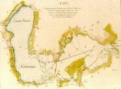

Története
Történet
A Fertõ eredete és múltja sokat vitatott kérdés. Régészeti feltárások következtében tudjuk, hogy a tó környéke már az újkõkor óta lakott. A rómaiak Pelso, Pejso, illetve Peiso név alatt ismerték. A Pelso nevet a Balatonra is alkalmazták. A német Neusiedl (régebben Neusiedel) elnevezés a tatárjárás után betelepített német "vendégekre" (hospites) utal.
 A 4. században állítólag Galerius császár kiszáríttatta, de csakhamar újra megtelt vízzel. A 14. században kisebb lehetett a jelenleginél. A közepe táján volt a legkeskenyebb, ahol vámot szedtek. Az a fertõi monda, hogy több község elöntése által Giletus fraknói herceg korában jött volna létre, teljesen alaptalan. A tó gyakori áradása és apadása több oklevélben is nyomon követhetõ.
A tónak a 19. században történõ kiszáradása volt a legnevezetesebb. 1855-ben vették észre, hogy a tó vize a rendes partjairól visszahúzódik. Eleinte igen lassan, majd szemmel láthatóan beljebb húzódott, míg 1866 júliusában teljesen eltûnt. A fennmaradt iszap annyira telítõdött vízzel, hogy veszélyes volt járni benne. A meder 1869-ig teljesen száraz volt, ezért felszántották és gazdasági épületek épültek benne. A kiszáradás oka a nagy szárazság volt, a tavat tápláló patakok vize is elapadt. A kiszáradás után belsejében sók keletkeztek, a szikpor különösen a keleti parton virágzott ki, ezt a lakók összesöpörték és szappant készítettek belõle. A kiszáradás alatt gyakran délibáb jelent meg.
A trianoni békeszerzõdéssel vált határmenti tóvá.